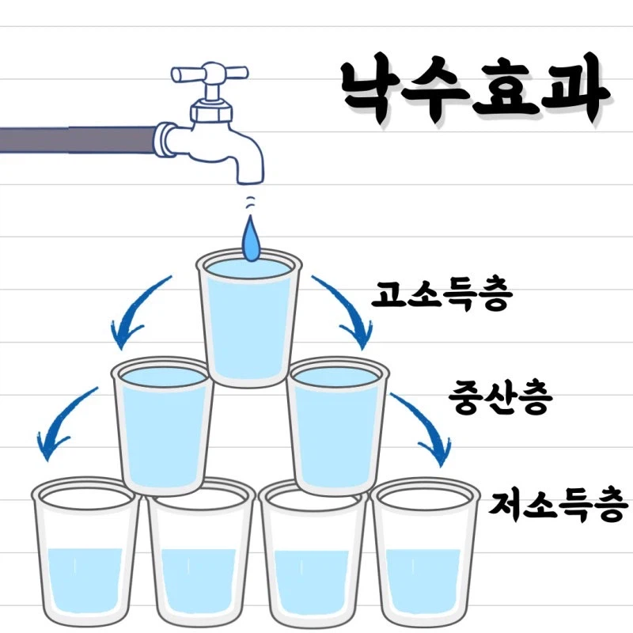
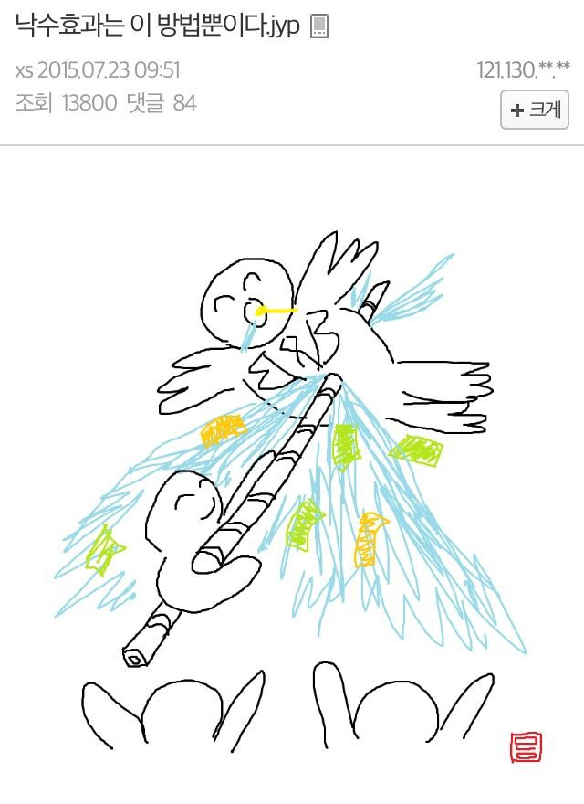

https://bbs.ruliweb.com/best/board/300143/read/76632044


https://bbs.ruliweb.com/best/board/300143/read/76632044



상속에 상한을 두면 해결되는거 아님?
상속에 제한을 둔다 쳐도 본인이 100살까지 살면서 손에 쥐고 있는걸 놓게 할 방법이 없으니까
100살 부자가 죽기 전까진 자본이 계속 모이면서 존나 큰 원기옥이 되는거임
죽더라도 저 돈이 아래로 흐를지는 모르는거고
세금으로 존나 뜯어가는게 아니면 결국 다른 자본가 지갑으로 가겠지
그렇다고 세금으로만 싹 걷어간다? 그럼 자본가들이 들고 일어나겠지 ㅋㅋㅋ
상속에 제한을 둔다는건 그 제한 넘는건 전부 다 국고 환수한다는거임.
그럼 결국 자본가들은 여러 편법으로 상속하게 되겠지...
지금도 자본가들이 온갖 편법 쓸텐데 여기서 더 뜯는다?
존나 모인 자본의 상속은 무조건적인 악이니까 금지해야 한다?
미국 금주법이랑 다를게 없어 보임... 부작용만 커질 것 같음
ㅈ같은 소리 하네 ㅋㅋㅋ 이미 존나게 떼간다
피냐타 경제법
결론적으로 어느정도 정부가 나서서 낙수가 되도록 컵을 좀 비틀어야된다고 생각함
그게 지금 한국경제가 아닐까 싶기도하네
사실 정확한건 낙수효과도 틀렸지만 피냐타 경제도 틀렸다는거임ㅋㅋㅋ 여기서 낙수효과 못 받아먹었다고 낙수효과 없다고 하는 얘들은 피냐타 효과도 받아먹지 못함. 그리고 죽창으로 부자들 찔러죽여도 나중에 본인도 그 부자랑 똑같아져서 죽창에 찔리는 엔딩이 진짜 죽창효과임. 삼전 노조위원장만 봐도 알 수 있는거지 헤쳐먹은자와 헤쳐먹고 싶지만 능력이 없는자의 싸움임ㅋㅋ
지금 반도체 얘기하는 애들 전부다 낙수효과를 이상하게 알고 있네.
낙수효과가 있었다면 반도체 성과급을 노조나 국가에서 왜 챙겨주고 얻어내려고 난리침? 가만히 둬도 물 떨어지는데.
언제 국가에서 챙겨주려고 했음? 오히려 %성과급 반대하고 이젠 %성과급 요구 시위는 노봉법 대상 아니라고 오빠가 정해준 노봉법 확정지었더만
그런 직접적인거 말고, 국가가 노동자 권리를 챙겨주고 싶지 않았으면 노조설립, 파업할 권리 같은것도 굳이 법으로 정하지 않았다는 그런 간접적인 걸 말하는거임. 애초에 그정도로 관심있지도 않아서 자세한건 모름.
역사를 봐라 한번이라도 저런 적이 있는지
어히려 못사는 사람들이 나눠주더라
본인의 것을 아낌없이 나눌 정도로 욕심이 없는 사람은 큰 돈을 벌 수 없음.
본인의 것을 아낄 줄 아는 사람은 생판 이름 모를 남을 위해 함부로 본인의 돈을 주지 않음.
존나 모순적이긴 해 ㅋㅋㅋ
낙수 있을수도있지 상위 1%가 1%의 생각으로 실천하는법말곤 없음
하지만 졸부새끼들의 천민자본주의때문에 낙수되는일은 없었다고 하네요~
낙수효과는 정부가 손안대도 자연스럽게 내려온다는 주장이긴함
관리잘된 S급 중고차는 시장에 안나온다는 그건가
돈생기면 그릇크기를 키워서 안흘리게 한다고~
일단 첫번째 컵이 넘쳐야 하는데 현실은 넘치지가 않음
컵이 계속 커짐ㅋㅋ
허상까지는 아녀. 다만 대기업들은 아래로 내려가는 물을 어떻게든 최대한 줄이려고 연구해왔지. 그리고 반도체 산업은 다른 산업에 비해 내려가는 물이 훨씬 적은 편
낙수효과랑 낙수이론을 혼동해서 말하니깐 생기기는거임
낙수 받아먹어도 지가 받아먹은줄 모르는 사람들이 대다수임
ㅋㅋㅋㅋㅋㅋㅋ 이게 다 과거 극우 부자들이 뿌린 약이라니까
„이론상으로 혁명이라는 단어는 그것이 천문학에서 쓰일 때와 같은 의미를 지닌다. 그것은 궤도를 완전히 한 바퀴 회전하는 운동이며, 완전한 공전을 거쳐 한 정부에서 다른 한 정부로 옮아가는 운동이다.
〔……〕
역사상 아직까지 혁명은 없었다고 말할 수 있다. 오직 하나의 혁명, 즉 결정적인 혁명 외에 다른 혁명이란 있을 수 없는 것이다. 궤도를 완전히 한 번 회전한 것처럼 보이는 운동은 정부가 수립되는 바로 그 순간에 이미 새로운 궤도 회전에 돌입한다“
반항하는 인간// 알베르 카뮈
혁명이라는 단어의 모순적인 부분은 어디까지나 그것이 대항할 지배가 있을때만 '혁명적'일 수 있다는 것이다. 혁명이 성공하는 순간 혁명은 혁명 이전에 있었던 모든 것을 자기 손으로 다시 세울 것을 요구받는다. 그렇게 혁명은 정부가 되고 '가짜 혁명'으로 전락하거나, 끝없이 모든 것을 죽이고 죽여가다 아무것도 남기지 않는 폐허를 만든다.
암튼 쟤 손에는 없죠? 내 손에 안와도 신나죠?
낙수효과는없음 있는놈들은 끝없이모음
죽창효과는 미국의 악명높은 의료 보험사의 CEO로 증명되었지.
의료 보험 거절 사례가 유의미하게 줄어들었거든
죽창은 효과 좋은데 다음이 누가될지 모름 순서 돌다보면 내가될지도
당장 증여세만 올려도 난리치는 애들이 뭔 ㅋㅋㅋㅋ
가장 대표적인 부의 재분배 수단이 증여세인데
그거 올린다고 난리친 개붕이들 다 어디감? ㅋㅋ
김낙수!!
배때지 칼빵!
낙수는 오답 정답은 콤프다